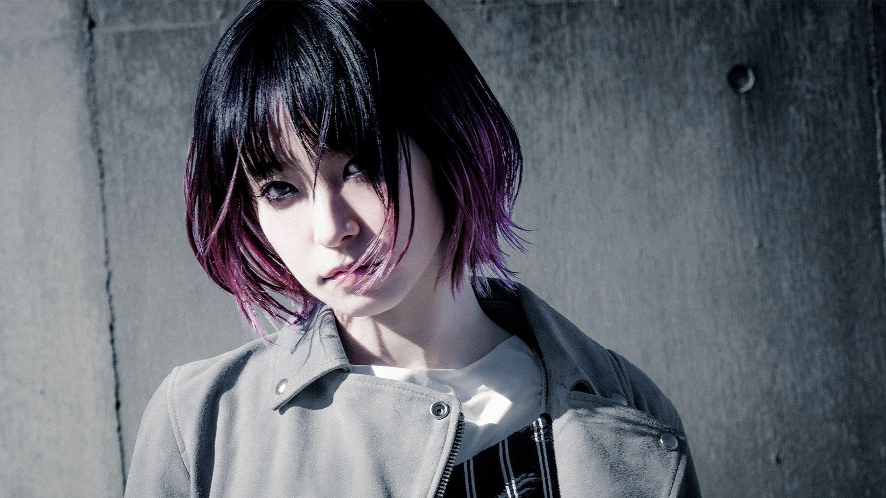

PROFiLE

 LISA
LISA
singer - songwriter
LiSA
Born in Gifu prefecture, born on June 24th.
The band "Girls Dead Monster" (commonly known as "Gardemo") in the TV anime "Angel Beats!" Broadcasted from the spring of 2010 was selected as the singer of the second vocal Yui, and a total of 400,000 single albums under the name of Gardemo Sell more than one and gain popularity.
He made his solo debut in the spring of 2011 with the mini album "Letters to U".
After that, he was in charge of the theme songs of many popular works such as TV animation "Fate / Zero", "Sword Art Online", "The Irregular at Magic High School", and recorded hits not only in Japan but all over the world.
In May 2018, they released their first best albums "LiSA BEST -Day-" and "LiSA BEST -Way-" at the same time, and dominated the 1st and 2nd place in the Oricon Weekly Album Ranking (with 5/21). ..
The song "Gurenge", which started distribution in April 2019, swept many daily charts immediately after distribution and achieved 38 crowns on the distribution daily chart. In the iTunes weekly song ranking, it first appeared first, and in the Oricon weekly digital single (single song) ranking (with 5/6, 5/13), it won the first place for two consecutive weeks, the last of Heisei and the first of Reiwa. Won the top spot in the weekly digital single (single song). In September, it became the first female solo artist song distributed in 2019 to exceed 300,000 downloads, and won "Platinum" in the paid music distribution certification of the Japan Records Association. At the end of 2019, "70th NHK Kouhaku Uta" He made his first appearance in "Battle" and won "Triple Platinum" in May of the following year.
In addition, performances with overwhelming enthusiasm, singing ability, and live performances centered on positive messages quickly gained popularity and sold out one after another (Hibiya Open Air Concert Hall, Nippon Budokan, Makuhari Messe, Yokohama Arena 2days, Saitama Super Arena 2days etc.) is recorded.
In October 2020, he released the album "LEO-NiNE" and the single "Homura" at the same time, and won "W1st place" in the Oricon daily album, single ranking (with 10/13). At the end of the year, he won the "Japan Record Award" at the "62nd Shining Record Awards". He also participated in the "71st NHK Kouhaku Uta Gassen" for the second consecutive year.
As a live artist who is active not only in the anime song scene but also in many rock festivals, he has shown his presence.
Inscription on the right: Today was also a good day.


.png)